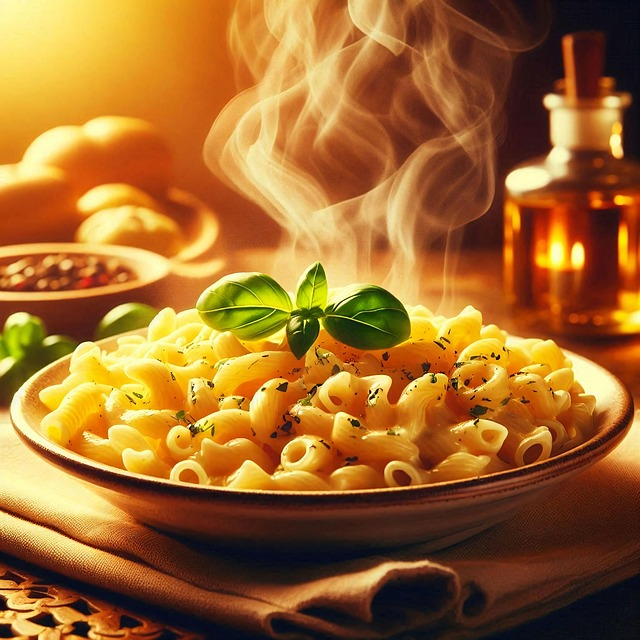

Mac and Cheese

Description
Nothing says comfort food like a warm, creamy bowl of mac and cheese. This simple recipe combines tender pasta
with a rich, cheesy sauce that's perfect for weeknight dinners or family gatherings.
With just a few ingredients, you can create a classic dish that's both satisfying and customizable—add breadcrumb
on top for crunch or mix in veggies and proteins to make it your own.
Ingredients
- 2 cups elbow macaroni (uncooked)
- 2 tablespoons butter
- 2 tablespoons all-purpose flour
- 2 cups milk
- 2 cups shredded cheddar cheese
- 1/2 teaspoon salt
- 1/4 teaspoon black pepper
Steps
- Cook macaroni according to package directions. Drain and set aside.
- In a saucepan, melt butter over medium heat. Stir in flour and cook for 1 minute.
- Slowly whisk in the milk until smooth. Continue stirring until the sauce thickens.
- Add shredded cheddar cheese, salt, and pepper. Stir until cheese is melted.
- Combine the cooked macaroni with the cheese sauce. Mix well to coat.
- Serve warm. Optionally, bake with breadcrumbs on top for a golden crust.
Home